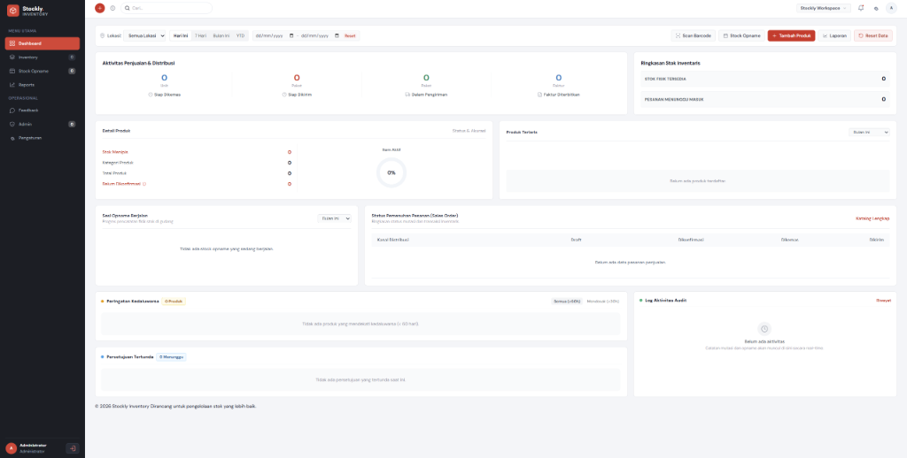

Live Web Production
Stockly. INVENTORY — Sistem Manajemen Stok & Distribusi
Dashboard tata kelola inventaris gudang dan supply chain terintegrasi: pemantauan stok fisik, otomatisasi alur distribusi penjualan (kemas & kirim), stock opname berkala, dan log audit mutasi barang secara real-time.
Akses Web Langsung
stocklyinventory.web.id
Status Sistem
Online • Aktif